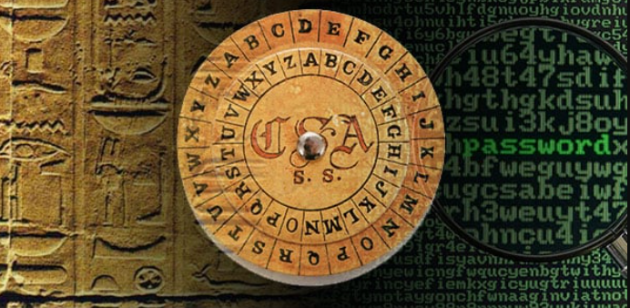
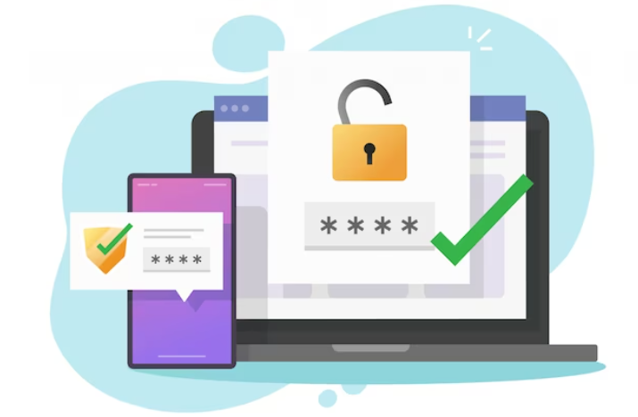
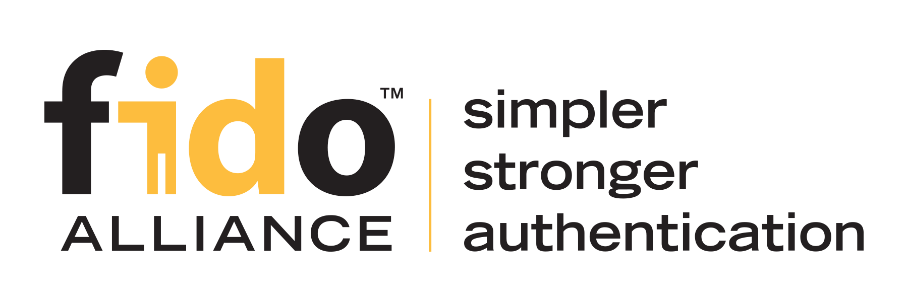
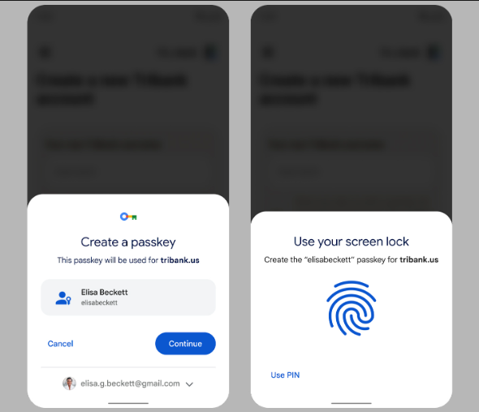
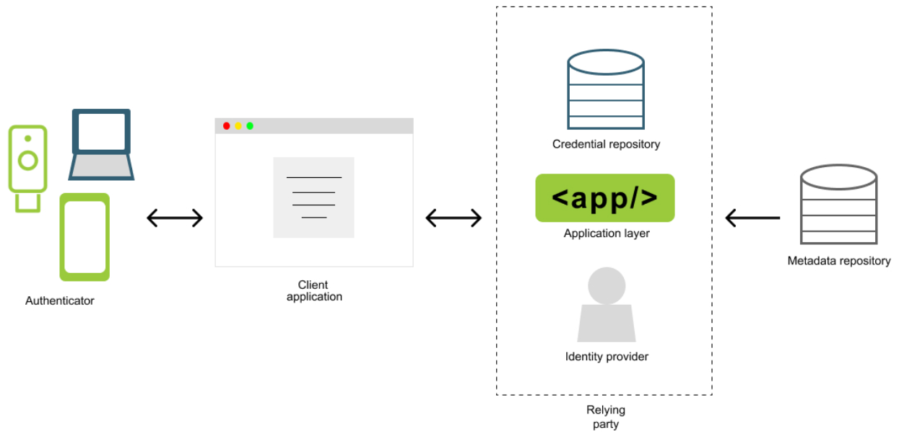

July 8, 2023 by Branislav Stojanović
Farewell to Passwords, Welcome Passkeys

New, more secure and much convenient method of authentication is in expansion and threatens to replace passwords as method of authentication we are all used to. FIDO alliance, which embraces passwordless authentication, is the organization that has established many standards and guidelines for secure authentication using passkeys. Today, many major organizations such as Google, Microsoft, and Apple have adopted the concept of passwordless authentication and implemented passkeys into their systems and products. But what passkeys actually are, how do they work and how they can replace passwords, find out in the text bellow.
Since the times of ancient civilizations passwords have been used to confirm that someone is the person they claim to be and can be trusted. There is tangible evidence that civilizations such as the Ancient Greeks, Romans, and even prehistoric civilizations in Mesopotamia used passwords, in various formats, to securely exchange confidential information. Today, millennia later, we still heavily rely on passwords on a daily basis. We use passwords to unlock doors, make card payments, log in to our online accounts and more. In today’s era of Internet almost every system relies on passwords to ensure security of its users. Using the same method for millennia seems kind of old-fashioned.

The main premise of passwords is that “only knowledge can verify one’s identity”, but is that really enough? Passwords are indeed information, and as such, they can be subject to theft. In the world of the internet, there are numerous methods of theft, and those with a lack of digital literacy are particularly vulnerable. We have to face it: Passwords are scarily insecure, and not because of their design but rather because of the way people are using them. Many people use short, simple passwords like “123456.” These passwords can be guessed in a matter of seconds. People also tend to use the same passwords for multiple accounts. If a password leaks from one of the systems, a hacker can access all of the user’s accounts. Additionally, people are prone to exposing their passwords themselves for the sake of convenience. I have witnessed on several occasions people writing down passwords on a sticky note and sticking it right on the screen of their PC. By this act, they have unconsciously made the concept of a password meaningless. Passwords are meant to stay secret, only known to us and kept far away from other people’s eyes and ears. Ideally, one should have a different password for each account, and every password should consist of multiple types of characters, numbers, and symbols in order to reduce the risk of someone guessing the password. If you are afraid that you’ll forget a complex password, please wait, don’t reach for that sticky note before you try some of the tools made for that purpose. They are called password managers. Password managers use sophisticated methods of cryptography to securely store passwords for all of your accounts. Password managers are available in various formats. You can choose among offline and online alternatives, as well as hardware ones. Some of the most popular online versions are LastPass and Dashlane, and most popular offline password manager is KeePass, which is also free and open-source. For those particularly skeptical people who do not trust anything they cannot sense physically, there are also hardware password managers, and most know of this kind is YubiKey. These guidelines for safe password usage are a must, your passwords will be significantly safer if you apply them, but that still won’t make the foolproof to hacker’s intentions to stole them. There are still many ways how hackers can obtain your password, and impersonate as you.
MFA

For this reason, multi-factor authentication methods have been introduced, and two-factor authentication a.k.a 2FA, is the most popular example.
But what is mutli-factor authentication (MFA) anyway? Authentication factors are the different categories or types of information or evidence that are used to verify the identity of an individual attempting to access a system or resource. There are typically three main factors of authentication:
- Something we know (like passwords)
- Something we own (like OTP codes on mobile phone, payment cards etc.)
- Something we are (biometric characteristic, like fingerprint, iris scan etc.)
Combining multiple factors of authentication can enhance security significantly. When relying on MFA, even tough someone gained access to your password, he still cannot access your account if he doesn’t have other factors. Unfortunately, even MFA does not guarantee that your account is safe. Hackers have found some sophisticated methods to bypass MFA security protocols even tough they don’t have access to your phone. You can check out this video to find out how hackers bypasses SMS code 2FA: https://www.youtube.com/watch?v=FwGeBW6OurM. Scams like this one are mostly performed using some sort of phishing and social engineering techniques. Phishing, as a technique of deceiving people into revealing sensitive information, is one of the biggest threats for internet security today, even bigger that malware exploits. There are research that says that mind-blowing 91% information security attacks start with phishing.
Biometric authentication is considered slightly safer than OTP codes, but it is still not foolproof and it is not pretty convenient to scan your face or finger all the time. Also, once scanned, face ID become a digital data and as such can be a subject to theft, especially if being sent over the network. This can have far greater consequences than access to an account. Once hacker get his hands on your biometric data, you can become a victim of identity theft. Impersonating as you, hacker can commit all kinds of malicious acts, and put you in a rather difficult position.
What if I tell you that there is a method of authentication much safer than all above mentioned methods, but still much convenient than all of them, convenient as clicking a button or scanning a QR code. Hard to believe, seems like sci-fi? Don’t worry, they are not aliens - meet passkeys.
Passkeys

Passkeys have become enormously popular thanks to FIDO Alliance, an organization who established many standards and enabled secure usage of passkeys. FIDO stands for Fast IDentity Online, and it is an open industry organization founded in 2013. with mission to “help reduce the world’s over-reliance on passwords”. The best way to define what passkeys are is to look up what does FIDO website says (https://fidoalliance.org/):
QUOTE: Passkeys /ˈpasˌkēs/ noun Based on FIDO standards, passkeys are a replacement for passwords that provide faster, easier, and more secure sign-ins to websites and apps across a user’s devices. Unlike passwords, passkeys are always strong and phishing-resistant. Passkeys simplify account registration for apps and websites, are easy to use, work across most of a user’s devices, and even work on other devices within physical proximity.
So, in a nutshell, you don’t have to create separate passwords, tokens, face or fingerprints, enter additional codes, none of that. You only need your chosen authenticator - which could be your phone, PC, tablet, USB etc, wherever you are storing your passkeys. You can use the same methods of authentication you’re using on your chosen device. So if you are used to unlocking your phone with a pattern, you can use the same method to authenticate to an online account. That also applies for face ID, fingerprint, phone pin or other methods that device you are using supports. Also one of the most common way of authenticating with passkeys, which replaces SMS codes as a proof mobile phone possession, is scanning a QR code with your phone. When scanning QR it’s also being checked if your device you are authenticating with is in relative proximity, as additional security measure. This proximity check works by contacting your device via bluetooth. But don’t worry, you don’t have to go to settings, turning on the bluetooth, pair devices, none of that. Everything is handled in the background. Signing in with scanning only QR code seems like a one-factor, how is that more secure than 2FA? But technically passkeys are still two factors, they use your mobile phone lock screen method as a second factor. So if you’ve unlocked your’s phone lock screen it’s assumed that you’ve completed one factor. Actually, to use a passkey your phone must have some sort of screen lock pin, pattern, face ID or fingerprint.
What is also great about passkeys, beside its convenience is that they are resilient to phishing attacks and data breaches. That is thank to the technology behind the passkeys!

Passkeys under the hood

Passkeys are implemented through WebAuthN or WebAuthentication API, which is actually an extension of the Credential Management API. This API is developed in the cooperation of FIDO Alliance and W3C(World Wide Web Consortium). This API is currently available in newer version of all major browsers but will surely be adopted by everyone. The key technology underlying this API is PKI (Public Key Infrastructure) or public key cryptography.
Essentially, public key cryptography (a.k.a asymmetric cryptography) is consists of two, mathematically linked pieces of data, called private and public key. Data encrypted(signed) with one key can be decrypted only with other one, and vice-versa. As the name implies private key is intended to stay secret, only known to its owner, while public key is accessible to others and intended to verify the authenticity of the author and integrity of the message.
For each website you are registering, your authenticator creates a passkey, with method of your desire. Under the hood your authenticator creates and stores new key pair. Copy of the public key is also stored on the server and linked to your profile. The next time you want to sign in to that profile on that website, server will send you a so called “challenge” that you have to complete to verify that you are who you say you are. Your authenticator, which has access to your private key, signs (digitally) that challenge and send it back to the server. Server, using your public key, can verify that you are the owner of the corresponding private key and the right user of the account your are trying to sign in. And thats it, you are authenticated in the blink of an eye, without need to enter some additional information.
Benefits of passkeys
Passkeys are strong by design: There is no need for user to make up a strong password, with different characters, symbols and numbers. Passkeys are created and stored by the authenticator itself and utilizing cryptography techniques, making it impossible to break or guess them.
The private key is never shared with the website: For that reason, the private key cannot be stolen in transit by eavesdroppers. And also, you don’t have to remember anything. Your authenticator handles that for you. Data breaches cannot affect your passkeys anyhow. Even though hackers leaks website database, the only thing they can obtain is your public key, which is simply public information and can’t be used without your private key.
Passkeys can be also used within password management and password synchronization tools like Google Passwords or ICloud Keychain from Apple. That will make your passkeys available through all connected devices. Also, if you lose your phone, your passwords are saved!
Passkeys are resistant to phishing attacks: When a passkey is created, it is stored in your authenticator and linked to a website for which it’s created. So if someone deceives you to sign in to a fake website, your authenticator won’t sign a challenge because it will recognize that there is no passkey for that website.
Passkeys are a big leap forward to more secure authentication on the internet. They are more secure than passwords and also more convenient than hardware security keys for those who don’t like to carry around a separate device. If you want to try out passkeys in practice go check them out on most popular platforms, like one that Google, Microsoft and Apple have.